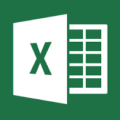

MICROSOFT EXCEL VIEWER

Microsoft Excel Viewer is a freeware program for viewing and printing spreadsheet documents created by Excel.
Excel Viewer is similar to Microsoft Word Viewer in functionality. (There is not a current version for the Mac.) Excel Viewer is available
for Microsoft Windows and Windows CE handheld PCs, such as the NEC MobilePro. It is also possible to open excel files using certain
online tools and services. Online excel viewers do not require users to have Microsoft Excel installed.
MS EXCEL Support Link :
SUPPORT
MS EXCEL Link :
EXCEL
Link to MicroSoft Home :
PRODUCTS